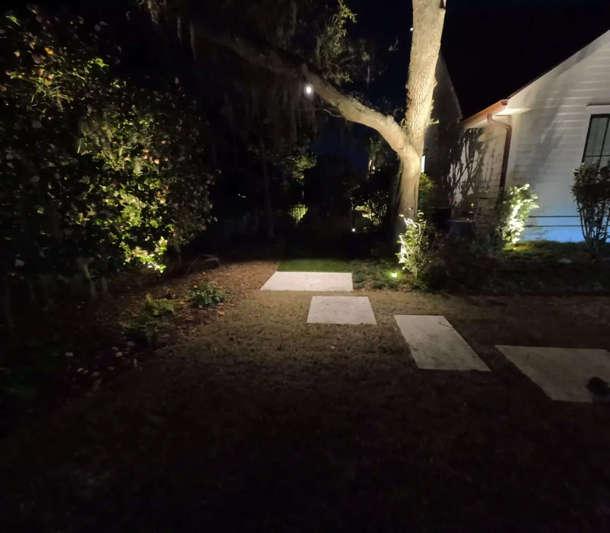
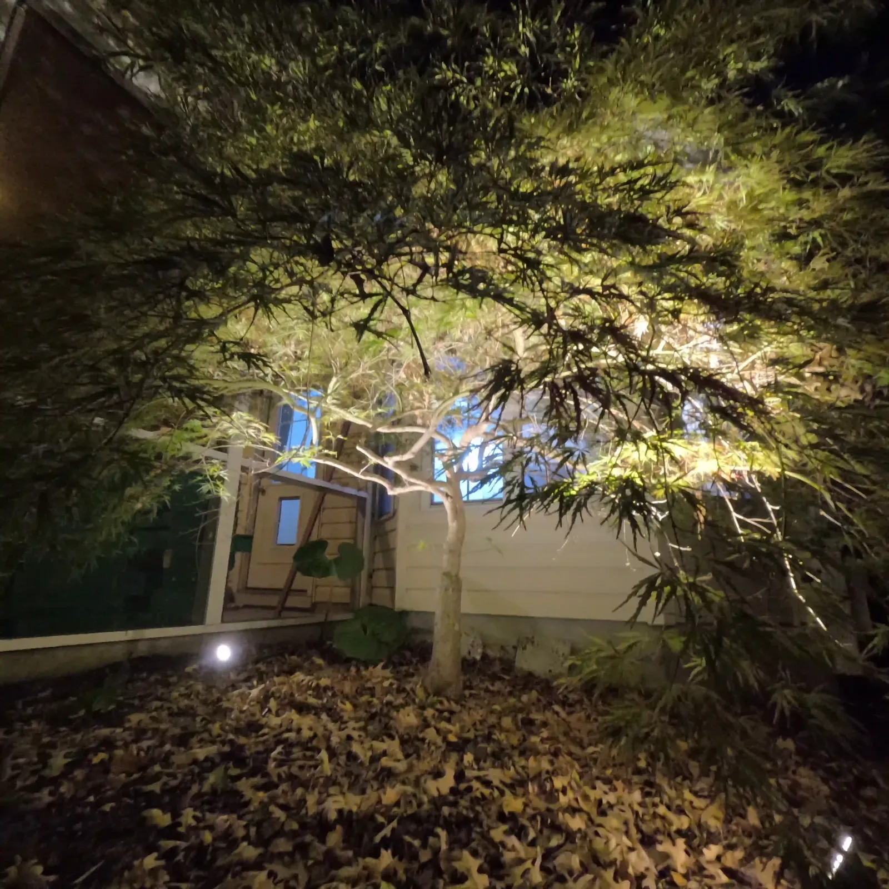
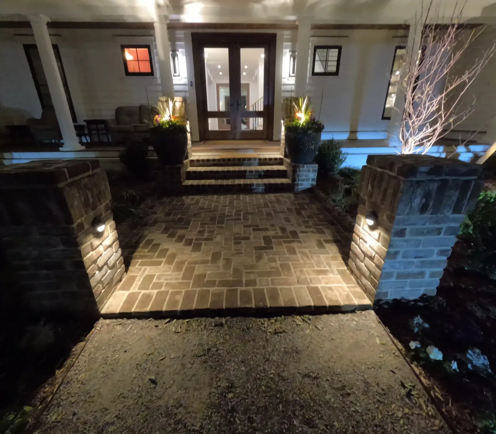

Landscape Lighting in Charleston, SC

Landscape Lighting The Yard You Paid For, After Dark
Most of the year in Charleston, the hours you actually want to be outside are the ones after work. Unlit, a yard that cost real money simply disappears at 7pm, and a patio nobody can see is a patio nobody uses.
Lighting is also the cheapest thing on this site that changes how a property feels. A single well-lit live oak does more for the front of a house than another round of planting.
We run the electrical ourselves, the same as the gas and plumbing on our kitchens and pavilions, and we light the structures we build as part of building them.
What Landscape Lighting Costs
| Per fixture, installed | about $200 as a starting point |
|---|---|
| Transformer | additional cost, and every system needs one |
The size of the job and the fixture you choose move the per-light number. Every quote follows a free consultation at your home, after dark where it helps.
Thinking in fixtures rather than in packages is the useful way to budget this. A front yard that needs two path lights, two uplights into an oak and a wash on the entry is a different number from a whole property, and both are worth quoting honestly.

What We Light, In What Order
- Pathways and stairs first. This is function before looks — though it happens to look good too. Steps you cannot see are the real hazard in a dark yard.
- Then the trees, with up lighting and down lighting. Uplighting a live oak is the single most dramatic thing lighting can do here. Down lighting from within the canopy gives you soft moonlight across the lawn.
- Then accent lighting on columns, the house itself and whatever the focal points of the property are.
Structures get their own layer. On our West Ashley cabana, tape lighting hidden above the beams washes the open rafter ceiling, with wall sconces at eye level and bistro lights over the patio — three different sources doing three different jobs in one space.

Paths, Steps and Trees Come First
Trees are where lighting earns its money. A Japanese maple like this one is a nice tree in daylight and the whole garden at night, from two fixtures set under it.
The same is true at a larger scale with a live oak: uplit, it is visible from the street, from the porch and from inside the house, and one fixture does all three.

Fixtures, Wiring and Control
- Low voltage throughout.
- Aluminum or brass fixtures. Brass is the upgrade and it is what we would put in a property we planned to keep.
- A transformer and a timer are not optional — every system needs both. They are the part of the quote people do not expect, and the part that decides whether the system is still working properly in five years.
- App control is available on the nicer controllers. They all work; the better ones let you change the schedule from your phone instead of in the dark beside the garage.
How the Work Goes
- Free consultation. We walk the property and talk through what matters at night.
- A plan by layer — paths and steps, trees, then accents and focal points.
- Fixtures chosen, aluminum or brass, and the transformer sized for the run.
- We install and wire it with our own crew, and set the timer.
Lighting goes in alongside planting, patios, fire pits and pavilions. If a structure or a patio is going in anyway, running the wiring at that stage is far easier than retrofitting it afterwards.
Projects We’ve Built
Real jobs, with the story of how each one came together.

Frequently Asked Questions
How much does landscape lighting cost in Charleston?
About $200 a light installed is a good starting point. The size of the job and the fixture you pick move that number, and every system also needs a transformer, which is an additional cost.
Where should landscape lighting go first?
Pathways and stairs, for function as much as looks. After that, up and down lighting in the trees, then accent lighting on columns, the house and the focal points of the property.
What kind of landscape lighting do you install?
Low voltage, with aluminum or brass fixtures. Every system needs a transformer and a timer. Controllers vary, and the nicer ones can be controlled from an app on your phone.
Can you light a pergola or pavilion?
Yes, and it is best done while the structure is being built. On our West Ashley cabana we hid tape lighting above the beams to wash the rafter ceiling, with wall sconces and bistro lights over the patio.
Request a Free Landscape Lighting Consultation
If you’re ready to enhance your home’s beauty, safety, and value with landscape lighting Charleston residents love, contact Cramers Landscaping today. We’ll visit your property, discuss your goals, and design a custom outdoor lighting plan that transforms your space after sunset.
Whether you’re located in Charleston, Mount Pleasant, Summerville, or anywhere in Charleston County SC, we’re ready to help you bring your landscape to life at night.
Call us today or request a quote online to get started with the trusted name in Charleston landscape lighting - Cramers Landscaping.